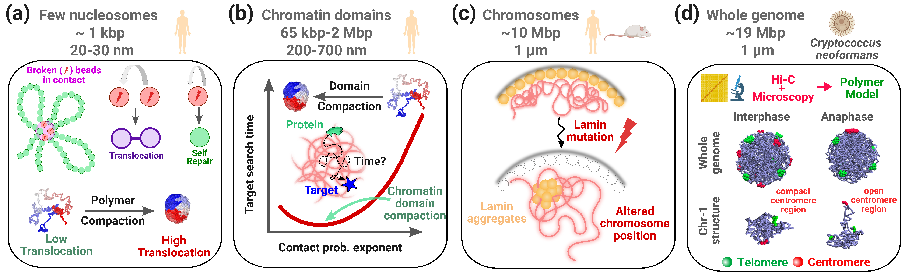

Research
Research Overview
The genome is a highly dynamic physical system. Although DNA is several metres long when extended, it is compacted into a nucleus only a few micrometres in size. This three-dimensional organisation influences how proteins find their targets, how chromosomes interact with their nuclear environment, and how the genome responds to damage and changes during the cell cycle.
My research uses theoretical and computational approaches to understand how the physical organisation and dynamics of chromatin regulate genome function. I combine coarse-grained polymer models, statistical physics, Monte Carlo and molecular dynamics simulations, and mathematical theory with experimental genomic and microscopy data.
My goal is to use experimentally constrained physical models to identify mechanisms that are difficult to resolve from experiments alone.

Figure 1. Multiscale physical modelling of genome organisation. My research investigates chromatin organisation across multiple biological length scales, from individual chromatin segments and domains to chromosomes and the whole genome, integrating experimental data with theory and computational modelling.
PhD Research
During my PhD at IIT Bombay, I developed theoretical and computational models, constrained by experimental data, to determine how the three-dimensional organisation of chromatin influences biological processes in the nucleus. I investigated this question across several length scales, from local chromatin organisation to whole-genome architecture.

Chromatin Organisation and DNA Rearrangements
How does chromatin organisation influence the outcome of DNA breaks?
DNA double-strand breaks can lead to chromosomal rearrangements and translocations, but the physical factors determining which genomic regions exchange positions remain poorly understood. Using Monte Carlo simulations of chromatin at different packing densities, I investigated how chromatin organisation affects translocation probability.
I found that translocation probability is not determined by contact frequency alone. Instead, the overall packing of chromatin and interactions involving multiple genomic segments play important roles in determining whether two DNA segments undergo a rearrangement. I further derived a theoretical framework for predicting translocation probabilities from chromosome contact probabilities obtained from Hi-C data.
Key finding: Contact frequency alone does not fully determine translocation probability; chromatin packing and multi-body interactions provide additional structural information.
Publication:
Jairam et al., Physical Review E (2026)

Chromatin Folding and Protein Target Search
How does the 3D folding of chromatin affect the ability of proteins to find their target sites?
DNA-binding proteins must locate specific target sequences within a highly crowded and dynamically organised genome. I investigated how chromatin folding influences this search process using polymer models, theoretical analysis, computational simulations, and chromosome contact-map data.
I found that chromatin domains exhibit a biophysical "sweet spot" of compaction that minimises the average target-search time. Moderate compaction enhances intersegmental jumps, allowing proteins to efficiently transfer between nearby chromatin segments. However, excessive compaction can hinder exploration and increase the likelihood of proteins becoming trapped within dense chromatin regions.
Key finding: An intermediate degree of chromatin compaction can optimise protein target search by balancing intersegmental exploration and molecular trapping.
Publication:
Dutta et al., PLoS Computational Biology (2026)

Nuclear Lamins and Chromosome Organisation
How does the nuclear lamina shape chromosome organisation and dynamics?
The nuclear lamina forms a dynamic structural network at the nuclear periphery and plays an important role in organising chromatin. Mutations in lamin proteins are associated with a range of human diseases known as laminopathies. I developed coarse-grained polymer models that explicitly describe interactions between chromatin and dynamic lamin proteins.
By constraining and validating the models against experimental microscopy data, I investigated how changes in lamin organisation influence chromosome positioning and nuclear architecture. The simulations revealed how pathological lamin mutations can reorganise the lamin network, alter chromosome positioning, and change lamin dynamics.
Key finding: Changes in lamin organisation can propagate to chromosome-scale architecture and dynamics.
Publications:
Dutta & Mitra, Subcellular Biochemistry (2025)
Nath et al., Nucleic Acids Research (2025)

Whole-Genome Organisation and the Cell Cycle
How does 3D genome organisation change as a cell progresses through the cell cycle?
Chromatin architecture is dynamic and undergoes dramatic reorganisation during the cell cycle. Using a fungal model system, I integrated microscopy, Hi-C data, and whole-genome polymer modelling to investigate how chromosome organisation changes during cell-cycle progression.
I showed that centromere clustering plays a central role in the unfolding of centromeric regions during anaphase. I further investigated the relationship between the three-dimensional positioning of genomic regions and their replication timing, revealing a connection between genome architecture and the temporal organisation of DNA replication.
Key finding: Cell-cycle-dependent genome organisation emerges from coordinated changes in chromosome positioning and centromere organisation.
Publications:
Kadam et al., Nature Communications (2023)
Polisetty et al., PNAS (2025)
Research Philosophy
Across these projects, I follow a common approach: experimental observations are used to construct and constrain physical models, while theory and simulation are used to uncover mechanisms that are difficult to resolve experimentally.
By working across scales—from individual chromatin segments and domains to chromosomes and the whole genome—I aim to understand how the physical organisation and dynamics of the genome give rise to biological function.
Current Research
How does chromatin organisation regulate genome function?
My current research builds on this multiscale framework to investigate how the organisation and dynamics of chromatin influence genome regulation. In particular, I am interested in how the spatial organisation of regulatory genomic regions affects the ability of transcription factors and other DNA-binding proteins to locate, bind, and regulate their target sites.
I am developing experimentally constrained coarse-grained polymer models of chromatin that incorporate genomic and epigenomic information to represent biologically distinct chromatin states.
I am also interested in understanding how dynamic processes such as loop extrusion and biomolecular phase separation reshape chromatin organisation and influence protein-DNA interactions.
A central question is whether changes in chromatin architecture can alter the precision, efficiency, and robustness of genome regulation by modifying the spatial search landscape experienced by regulatory proteins.
Approach and Methods
- Polymer physics: Coarse-grained models of chromatin and chromosomes.
- Computational modelling: Monte Carlo, Langevin dynamics, and molecular dynamics simulations.
- Statistical physics: Scaling laws, contact probabilities, stochastic processes, and analytical theory.
- Genomic data: Hi-C and other chromosome conformation data.
- Microscopy: Integration of imaging data to study three-dimensional organisation and dynamics.
- Multiscale modelling: Connecting local chromatin interactions with chromosome- and genome-scale organisation.
Research Experience
Research on chromatin organisation, polymer physics, protein target search, nuclear lamina, genome organisation, and DNA rearrangements.
Supervisors: Prof. Mithun K. Mitra and Prof. Ranjith Padinhateeri
Run-and-tumble dynamics of E. coli
Supervisor: Prof. Manoj Gopalakrishnan
Stochastic Processes
Supervisor: Prof. Pradeep Kumar Mohanty